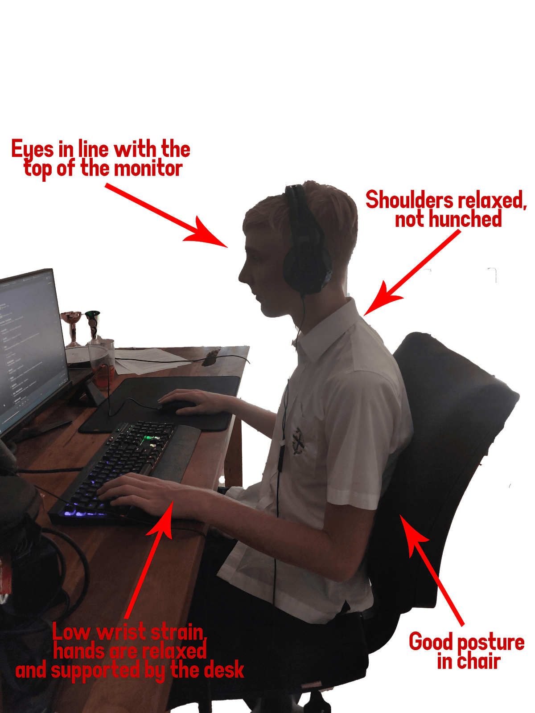

Samuel Andre Mercer, more commonly referred to as CheeseMKW is an online influencer that specalises in the analysis and deconstrution of complex and algorithmic graphs. His early works included the invention of the LRAC (Long Run Average Cost) graph and the Demand and Supply model. He studied at Havard University majoring as a Financial Analayst. He would soon become well regarded around the world for his expert opinion on many facets of economic theory. He currently works for KPMG as an executive director of the company, where he provides financial analysis of complex machine learning algorithms modelling the financial market.
Jozef ‘Pirateness’ Kowalski, the man, the myth, the economic supernova. Kowalski is ranked as Second-In-Command as Skipper's Lieutenant, Shock Unit (Mr.) Kowalski is the smartest, tallest (if unusually small for his species), and thinnest penguin. He makes his debut in Madagascar, a supporting character in Madagascar: Escape 2 Africa and Madagascar 3: Europe's Most Wanted and one of the main characters of Penguins of Madagascar: The Movie. Kowalski forms plans for the group and usually takes notes for Skipper. His knowledge has allowed him to take up positions where his intelligence is needed, such as being the team's medic as well as chief scientist and inventor. He tends to unnecessarily over-analyze simple situations. Kowalski's main disadvantage is that sometimes he over-analyzes things, extensive reasoning getting in the way of acting.